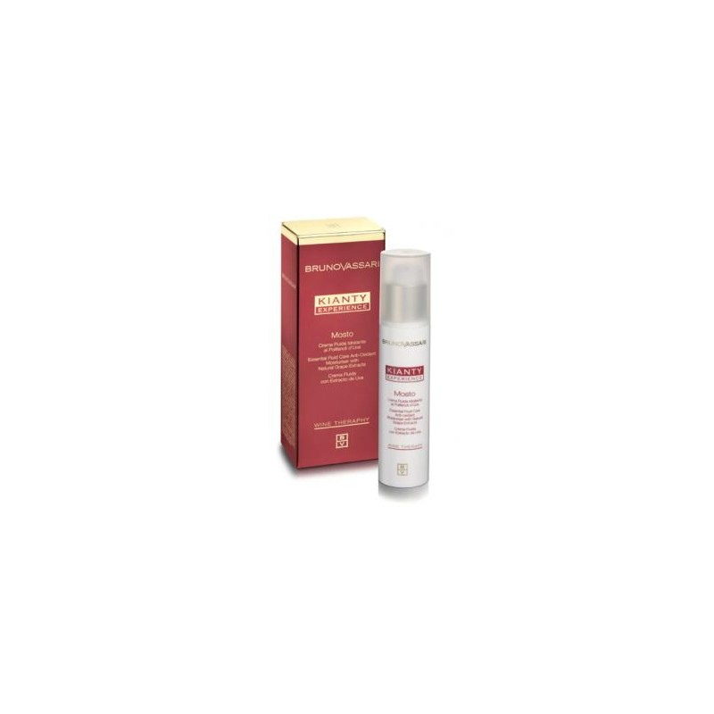

Kianty Experience
Crema anti-imbatranire contine ingrediente active si reprezinta un tratament complet impotriva tuturor tipurilor de riduri. Rezultatele devin vizibile in primele 30 de zile de tratament.
RON

PIOGGIA DI VIGNA KIANTY EXPERIENCE
Lotiune tonica cu extract de strugure si actiune anti-imbatranire. Contine oligoelemente si minerale (iod, fer, zinc, magneziu, cupru, potasiu, sulf, fosfor si mangan), vitamine (B3, B4, A si C) si polizaharide, care au un efect regenerant, de fermitate si revitalizant asupra pielii.
Complex de alge marine (Aonori, Ascophyllum, Criste Marine, Fuscus, Laminaria Digitata si Nori) si extract de struguri.
RON
Lotiune Faciala de Curatare cu Acid Glicolic
Lotiune faciala cu acid glicolic ce curata profund si pregateste pielea pentru tratamente cu AHA(Alfa-hidroxi-acizi) aplicate ulterior. Poate fi utilizat si ca tonic.
RON
Lotiune Tonica pentru Tenul Sensibil Bruno Vassari Refreshing Toner 250ml
Lotiune tonica ce îndeparteaza resturile produselor de curatare si demachiere si elimina celulele moarte ce se acumuleaza pe suprafata epidermei pe parcursul zilei. Refreshing Toner lasa pielea curata, neteda si hidratata.
RON
Lotiune Demachianta Hidratanta Bruno Vassari Fresh Cleansing Fluid 250ml
Lotiune demachianta blanda pentru tenul sensibil. Fresh Cleansing Fluid indeparteaza machiajului si excesul de reziduri uleioase. Formula nu contine emulsifiant si parfum fiind perfecta pentru a echilibra si restabili conditiile cutanate fiziologice normale.
RON

Tonic sub forma de lapte Bruno Vassari Clarifying Milky Toner 200ml
Tonic usor care completeaza ingrijirea zilnica a tenului.
RON
Crema hidratanta pentru ten normal si gras Bruno Vassari Aqua Sorbet Light 50ml
Crema hidratanta pentru ten normal si gras/uleios. Aceasta stimuleaza selectiv componentele hidratante naturale ale pielii si ajuta la mentinerea echilibrului hidro-lipidic.
RON

Crema Fluida cu Extract de Struguri Bruno Vassari Mosto Kianty 50ml
Crema hidratanta cu polifenoli din struguri, vitamine si oligoelemente ce protejeaza pielea impotriva radicalilor liberi si are actiune de revitalizare asupra tenului.
RON
Crema Activa Anti-Age Bruno Vassari Pate D’uva 50ml
Crema anti-age cu extract din seminte de struguri si vitamina E.
RON
Crema- Gel tratament pentru tenul gras Bruno Vassari Oil Free Moisturizing Gel Pure Solution 50ml
Gel adresat tenului gras ce asigura un grad optim de hidratare. Protejeaza echilibrul natural al pielii, pentru o piele fara probleme. Absorbtie rapida, ofera un aspect sanatos si mat.
RON
Gel Purificator de Curatare pentru Ten Gras/Uleios Bruno Vassari Cleansing Gel Pure Solution 150ml
Gel pentru curatare in profunzime si demachiere. Elimina toate impuritatile pielii, inchide porii si normalizeaza secretia de sebuum.
RON
Emulsie Matifianta si Hidratanta pentru Ten Gras/Uleios Bruno Vassari Balance Fluid Pure Solution 50ml
Balance Fluid este o emulsie hidratanta FARA ulei ce elimina luciul datorat excesului de sebum si lasa tenul catifelat si matifiat.
RON